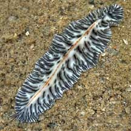
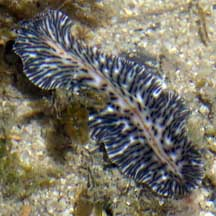

|
|
| flatworms text index | photo index |
| worms > Phylum Platyhelminthes > Class Turbellaria > Order Polycladida |
| Red-lined
flatworm Maritigrella virgulata* Family Euryleptidae updated Feb 2020 Where seen? Sometimes seen on some of our shores, among coral rubble near living reefs, usually at night. 'Virgulatus' in Latin means 'striped'. Features: 5-7cm long. Body cream-white to beige with a pattern of fine black bars of unequal length along the edges with a thin broken orange or red line along the centre. Has a pair of tentacles that extend like flaps at the front of the body. What does it eat? Maritigrella flatworms eat ascidians by sucking out each individual ascidian with a tube-shaped pharynx (a part of the gut) that can be pushed out through the mouth to engulf the prey. |
 Pulau Semakau, Oct 09 |
 Pulau Jong, Jul 07 |
*Species are difficult to positively identify without close examination.
On this website, they are grouped by external features for convenience of display.
| Red-lined flatworm on Singapore shores |
On wildsingapore
flickr
|
| Other sightings on Singapore shores |
| Terumbu Raya, Sep 2019 |
| Pulau Sekudu, Jul 2019 |
|
Acknowledgement References
|